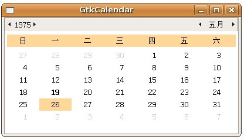

| GtkCalendar
是個可以顯示月曆的元件，只要使用gtk_window_new()建立元件，就可以擁有一個完整的日曆元件顯示，若要設定日期，則可以使用
gtk_calendar_select_month()設定年及月份，使用gtk_calendar_select_day()設定日。 使用gtk_calendar_select_month()設定時要注意的是，月份可設定的數值是從0到11，0表示1月，11表示12月，而使用gtk_calendar_select_day()設定值則為1到31，或是設定為0表示不選取日。 您可以使用gtk_calendar_mark_day()、gtk_calendar_unmark_day()或 gtk_calendar_clear_marks()設定日期標記，若要得知被標記的日期資訊，可以透過GtkCalendar結構的成員 num_marked_dates得知有幾天被標記了，marked_date為一個陣列，可用以得知哪一天被標記了，例如： if (calendar->marked_date[26-1]) {
// 日期 26 被標記了 } 要注意的是，陣列索引值是從0開始，所以存取marked_date時，日期實際上要減去1，才會是對應的索引。 另外，Calendar成員中的month、year與selected_day分別表示目前看到的月、年及所選中的日，若要取得選中的年、月、日，則可 以使用gtk_calendar_get_date()函式，您必須提供三個變數的位址給它，執行過後，三個變數中就會儲存對應的年、月、日： void gtk_calendar_get_date(GtkCalendar *calendar,
guint *year, guint *month, guint *day); 下面這個程式是個簡單的示範：
#include <gtk/gtk.h> 一個執行結果如下所示：  |